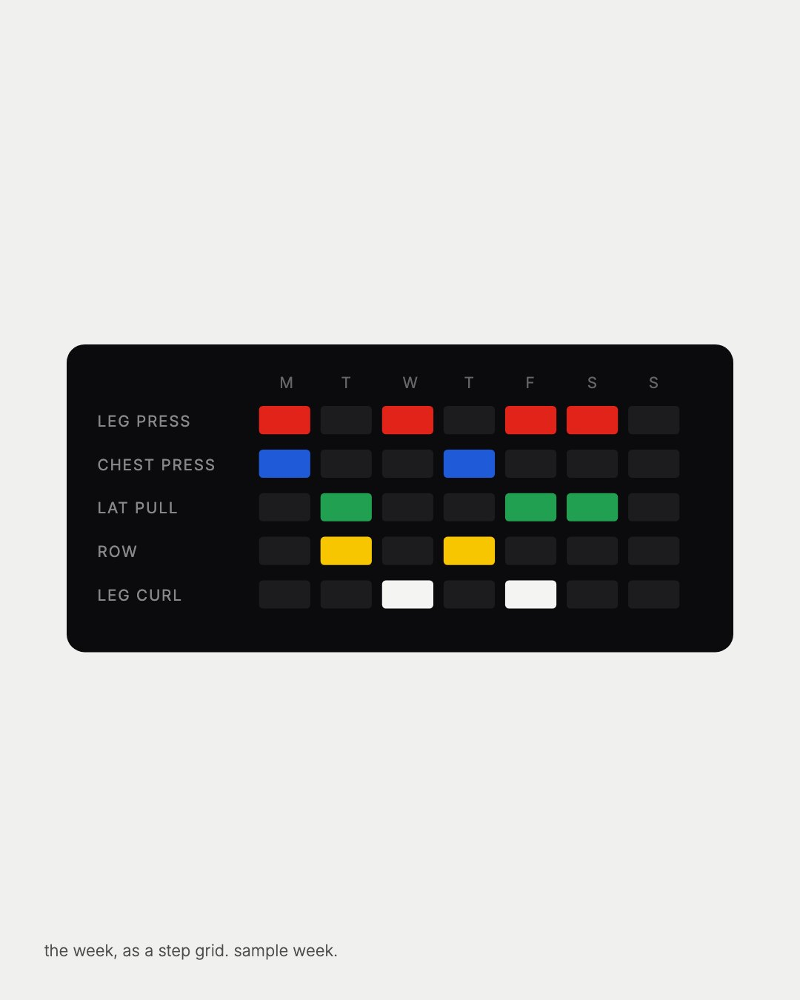
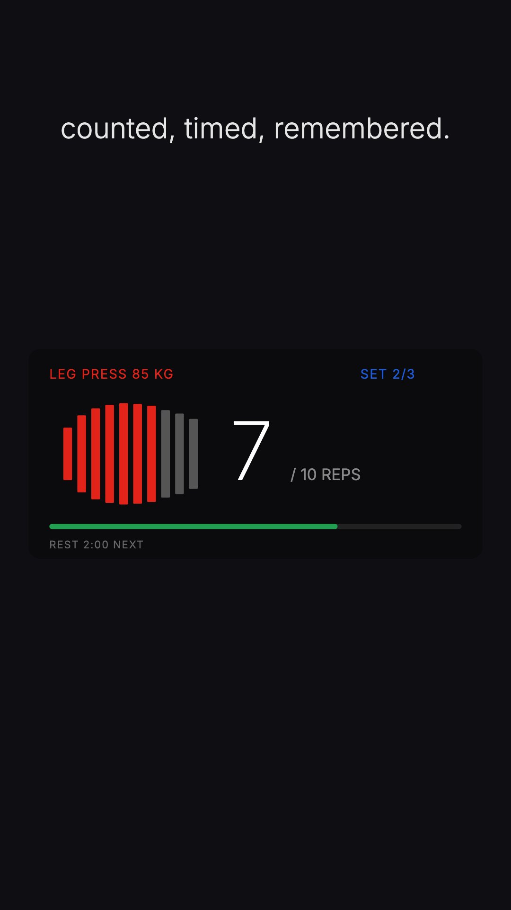

direction 2, ours, built on the teenage engineering copy
wake up your machines.
don’t replace the machines a gym already owns. make them count.
round two: our version, made with the teenage-engineering-design skill from the copy. kept: the grey ground, the black glass screens, thin lowercase type, small capitals, the object lit like an instrument. made ours: the colour code and the dial.
the story.
every gym is full of machines that work perfectly and know nothing. new smart machines cost a fortune and a new gym floor takes years. a small sensor on the weight stack turns the machine a gym already owns into one that counts. built with the care of an instrument, explained in lowercase, with a straight face and a little wit.
the enemy
the replacement cycle. throwing out good machines to get a screen.
the promise
same machines. now they count.
brand kit.
logo
the name in lowercase, thin, alone. a small outlined badge says what stage a product is at, the way teenage engineering marks its own.
colour
ground#f0f0ef
ink#000000
menu grey#77777b
link#0071bb
screen#0b0b0d
red, 25 kg#e2231a
blue, 20 kg#1f5bd8
green, 10 kg#20a050
yellow, 15 kg#f7c600
white, 5 kg#f4f4f2
pale grey for every page, black glass for every screen, flat bright colour only on screens, and only the gym’s own plate colours, so every colour means a weight.
type
the beauty of upgrading.
built from years of watching gym floors.
COUNTS EVERY REP
TIMES EVERY REST
teenage engineering draws its own type. stand-in here: inter in thin and light weights, 44, 22 and 11 px, lowercase, the lists in small capitals.
photography
the object alone, on grey, lit like an instrument. no people needed.
voice
smaller, smarter and zero new machines.
if it feels simple. it is.
the back is a holder and a coin cell.
lowercase, short, exact, a little dry. say what it is, then one joke at most.


posts and stories.
ours, on teenage engineering’s feed.

